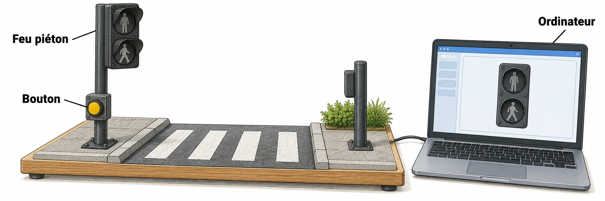

OBSERVER · EXPÉRIMENTER · EXPLIQUER
Mon programme de feu piéton
Complète la transition de ton feu, teste chaque règle, puis enregistre ton application.

✎ Garde ta feuille à côté de toi.Ordinateur : manipulations et mesures simulées. Papier : relevés, réponses, calculs et croquis.
Q1 à Q4 · Mon feu piéton
Le studio suit ta fiche : observe la démonstration, complète les trois mots, lance ton programme et vérifie les tests. Termine par l’enregistrement de ton application.
Sur ta feuille
Garde tes réglages, tes résultats et tes explications dans l’ordre des questions.